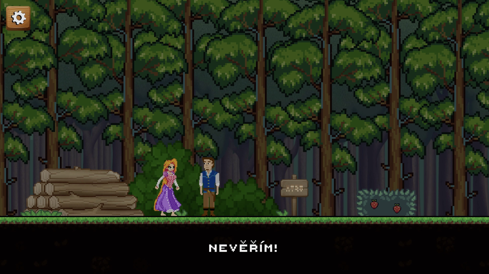
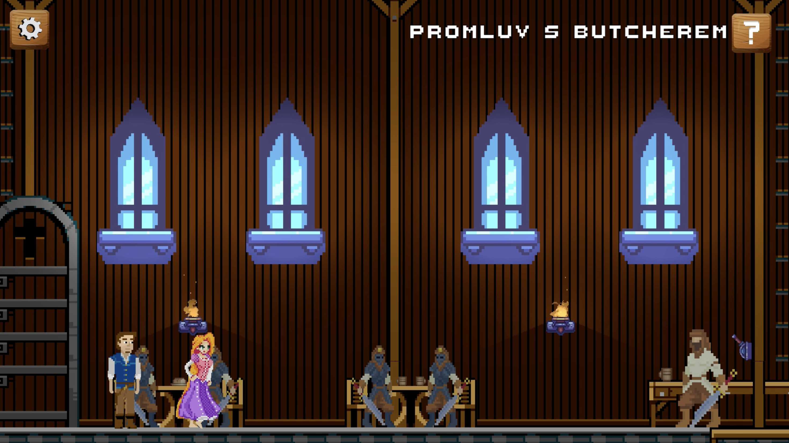
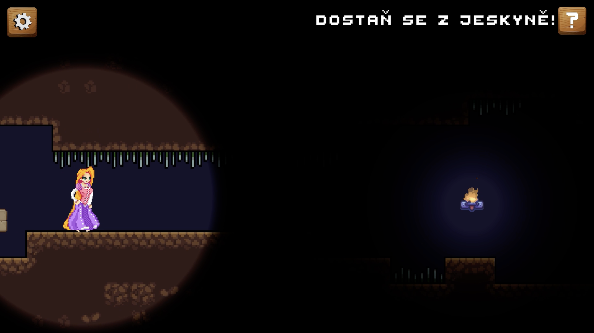
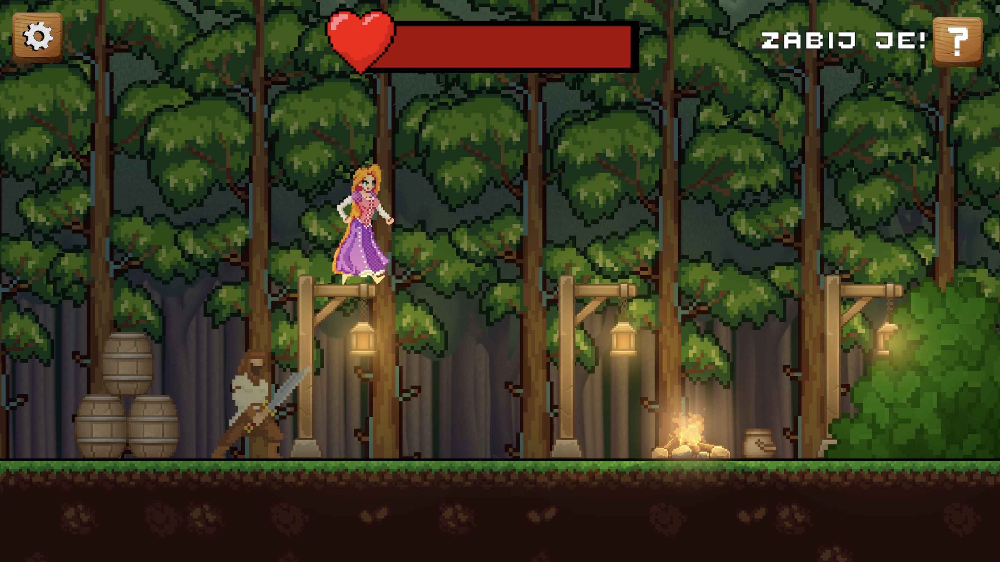
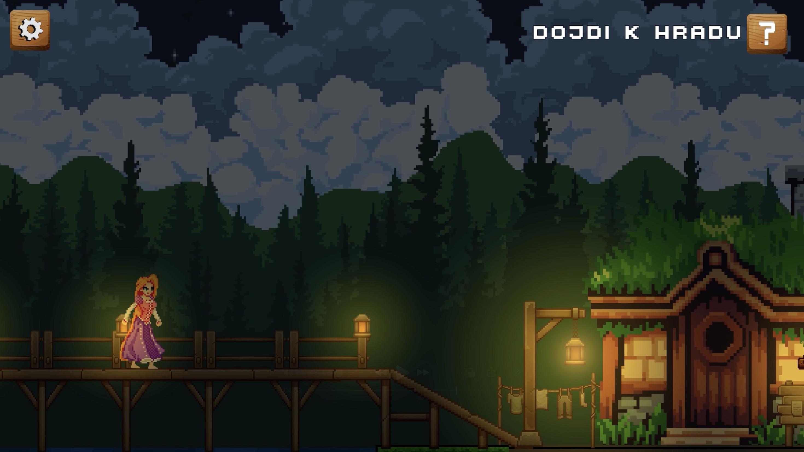
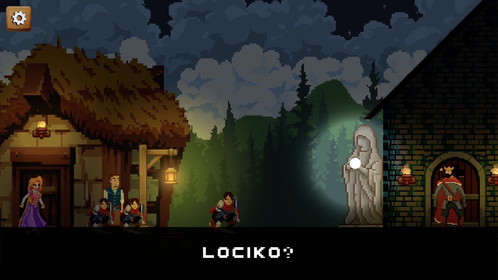

Tangled (Na vlásku)
About Tangled
Tangled (Na vlásku) is a 2D pixel-art story-driven platformer built in Unity as a school assignment, adapting the fairy tale of Rapunzel (Locika) and Flynn Rider. The game blends platforming challenges, story dialogues, stealth/crouching mechanics, and melee combat across handcrafted environments.
A signature mechanic of the game is Rapunzel's magic song: holding H makes her sing, which casts a glowing light radius in pitch-black caves and regenerates her health during combat encounters in the forest.
Key Mechanics & Features
- Story Dialogues & Cutscenes: Interactive conversations between Rapunzel, Flynn Rider, tavern characters, and royal guards driving the plot forward.
- 2D Platforming & Hazards: Vertical climbing inside the tower, jumping over deadly forest spike traps, and crouching (S) through low cave tunnels.
- Singing Light & Healing Mechanic (H): Holding H triggers Rapunzel's song, illuminating dark underground areas and restoring health during fights.
- Frying Pan Combat (Q): Melee combat against sword-wielding bandits in the woods on the way to the Kingdom and the floating lanterns.
Gameplay Screenshots

Story & Character Interactions
Dialogue moments between Rapunzel and Flynn Rider that set the adventure in motion.

2D Platforming
Navigating platforms, obstacles, and environmental traps across the world.

Handcrafted Pixel-Art Locations
Exploring detailed interior and exterior scenes filled with NPCs and story events.

Darkness & Singing Mechanic
Using Rapunzel's glowing song aura to light the way and survive dangerous passages.

Action & Encounters
Facing off against enemies in the forest while managing health and positioning.

Atmospheric Night Scenes
Reaching the final destinations of the journey under the night sky.